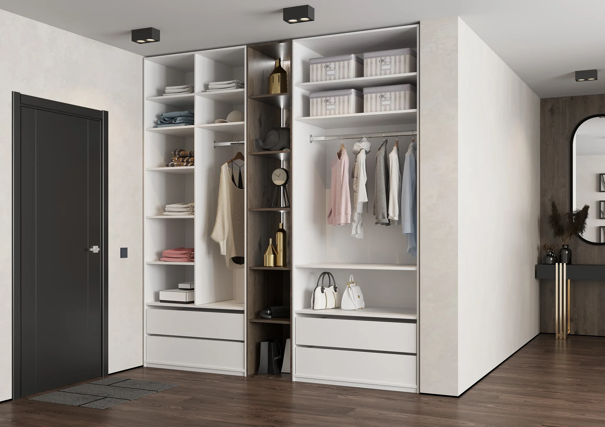
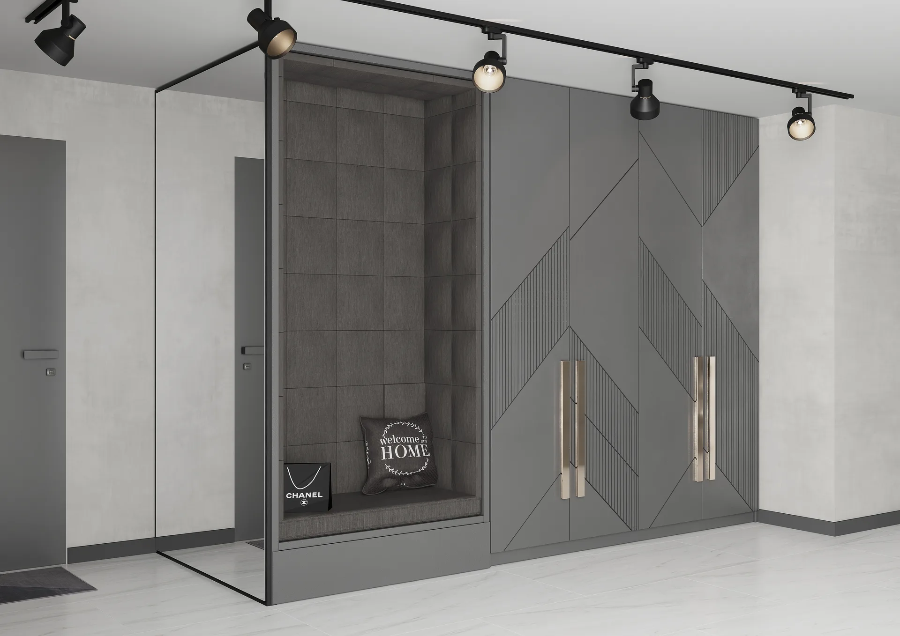
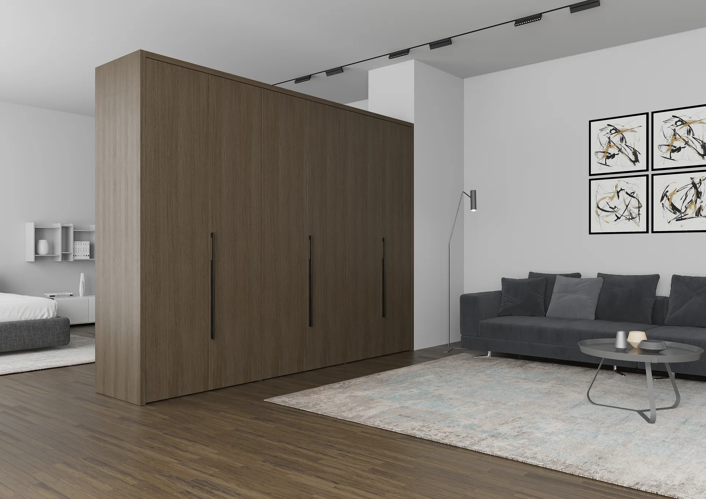

Точный размер
Используем ниши, простенки и высоту помещения, чтобы хранение работало на всю площадь.
Системы хранения REMIZ
Проектируем встроенные и отдельно стоящие шкафы под геометрию комнаты, состав вещей и привычный порядок.
Используем ниши, простенки и высоту помещения, чтобы хранение работало на всю площадь.
Полки, штанги, ящики и выдвижные системы собираем под одежду, книги, технику и бытовые вещи.
Подбираем фасады, ручки и оттенки так, чтобы шкаф поддерживал архитектуру комнаты.



Выберите подходящие фасады и системы в разделе материалов, а готовые решения — в портфолио.